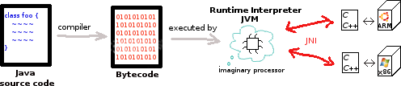
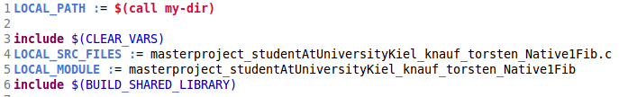
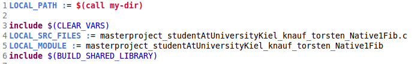
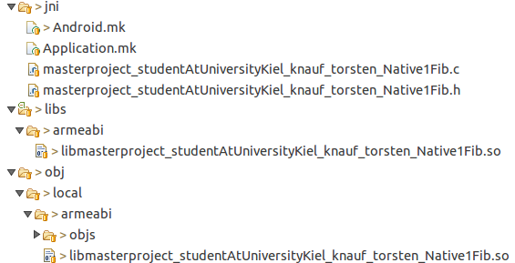
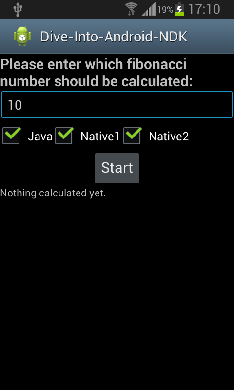
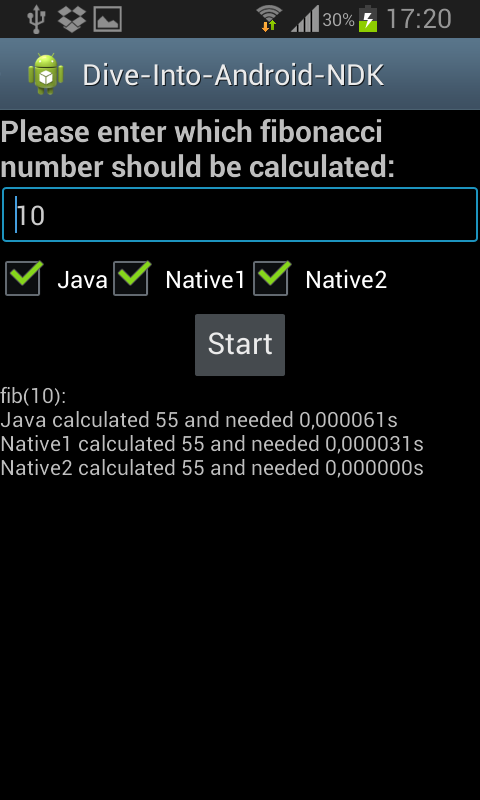
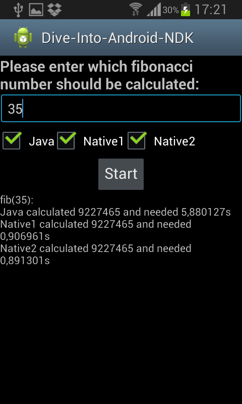

Dive into Android NDK
After we have realized that compilation of C and Java is done in complete different worlds, we want to dive smoothly into the Android NDK (native developer kit), which combines these two worlds within an Android application. First we are going to take a glance at the Java Native Interface (JNI), which lets us call C-functions within Java. Second the NDK basics will be explained. After that I tried to dive in with a little example-project in Android Studio - and crashed really frustrating. Finally I tried the same with Eclipse and become happy again :) My full example project can be found here and is inspired by this.Java Native Interface (JNI)
We have already seen here that Java code runs within a VM and therefore some translation for the concrete underlying platform has to exist. Among others this is done with JNI, which lets us call C/C++ within Java code and vice versa.
For example reading a file from hardware depends obviously on the hardware it is stored in. So the Javaread()-method from the class FileInputStream
is kind of an abstract method which gets implemented in a native language. We will explore this concept with a native fibonacci method. Fib(n) is defined as:
f1=f2=1 and fn=fn-1+fn-2 for n>2. The declaration in Java is done as the following:
public native long calcFib(long n);The
native-keyword defines that the implementation of this method is done in a native language. And our implementation in C is:
#include "masterproject_studentAtUniversityKiel_knauf_torsten_Native1Fib.h"
static jlong fib(jlong n) {
return n <= 0 ? 0 : n == 1 ? 1 : fib(n - 1) + fib(n - 2);
}
JNIEXPORT jlong JNICALL Java_masterproject_studentAtUniversityKiel_knauf_torsten_Native1Fib_calcFib
(JNIEnv *env, jobject o, jlong n) {
return fib(n);
}
- The second method is our implementation of the above native function. Per convention its name has to start with "Java_",
followed by the full qualified name of the function, which gets implemented. Dots have to be replaced with "_". So the function is in a class
Native1Fib, which lays in the packagemasterproject.studentAtUniversityKiel.knauf.torsten. JNIEXPORTandJNICALLare just macros, which help linking Java and C code together.jlongis the matching C-type for Java'slong. This mapping is necessary, because in Java long has always the size of 64bit, while in C the size of long can be different for different hardware. Thereforejlongensures the size of 64bit in C. More mappings are shown here.JNIEnv *envis a pointer, through which integration with the Java VM is possible. Because our function is not static,jobject ocontains a reference of the calling Java Object. If it would have been a static function,jobject owould be replaced throughjclass clazz, which would be a reference of the calling class.- And finally
jlong ncontains the parameter of the function. We do the real work in a different method, because coping JNIEnv *env and jobject o in every recursive call would be unnecessary work!
javah masterproject/studentAtUniversityKiel/knauf/torsten/Native1Fib
generates the header file beneath, which is included in our C-implementation for helping with the function-header. (I think, the need for calling from the source directory,
so that the package name doesn't get messed up, is poor handcraft, but that's the way it is.)
/* DO NOT EDIT THIS FILE - it is machine generated */
#include <jni.h>
/* Header for class masterproject_studentAtUniversityKiel_knauf_torsten_Native1Fib */
#ifndef _Included_masterproject_studentAtUniversityKiel_knauf_torsten_Native1Fib
#define _Included_masterproject_studentAtUniversityKiel_knauf_torsten_Native1Fib
#ifdef __cplusplus
extern "C" {
#endif
/*
* Class: masterproject_studentAtUniversityKiel_knauf_torsten_Native1Fib
* Method: calcFib
* Signature: (J)J
*/
JNIEXPORT jlong JNICALL Java_masterproject_studentAtUniversityKiel_knauf_torsten_Native1Fib_calcFib
(JNIEnv *, jobject, jlong);
#ifdef __cplusplus
}
#endif
#endif
After building the C-library we have to tell within the Java class of the native function, that an implementation can be found in it.
So here is how the full class looks like, where libmasterproject_studentAtUniversityKiel_knauf_torsten_Native1Fib.so is the name of our builded library:
package masterproject.studentAtUniversityKiel.knauf.torsten;
public class Native1Fib implements CanCalcFib{
public native long calcFib(long n);
static {
System.loadLibrary("masterproject_studentAtUniversityKiel_knauf_torsten_Native1Fib");
}
}
At runtime when a native function in Java is called for the first time, the Java VM searches in the environmental variable LD_LIBRARY_PATH for a
corresponding native implementation and than redirects every call in the future to it. If no native implementation was found a
java.lang.UnsatisfiedLinkError exception is thrown.
That approach has two disadvantages:
- A possible runtime error at first native function call is unsatisfying.
- When you have many native functions you definetly don't want to change package names. You forget easily to change headers of corresponding native implementation and changing it for every native implementation is no fun at all!
#include <jni.h>
namespace masterproject_studentAtUniversityKiel_knauf_torsten {
static jlong fib(jlong n) {
return n <= 0 ? 0 : n == 1 ? 1 : fib(n - 1) + fib(n - 2);
}
static jlong calcFib(JNIEnv *env, jobject o, jlong n) {
return fib(n);
}
static JNINativeMethod method_table[] = {
{"calcFib", "(J)J", (void *) calcFib}
};
}
using namespace masterproject_studentAtUniversityKiel_knauf_torsten;
extern "C" jint JNI_OnLoad(JavaVM* vm, void* reserved)
{
JNIEnv* env;
if (vm->GetEnv(reinterpret_cast<void**>(&env), JNI_VERSION_1_6) != JNI_OK) {
return -1;
} else {
jclass clazz = env->FindClass("masterproject/studentAtUniversityKiel/knauf/torsten/Native2Fib");
if(clazz) {
env->RegisterNatives(clazz, method_table, sizeof(method_table) / sizeof(method_table[0]));
env->DeleteLocalRef(clazz);
return JNI_VERSION_1_6;
}
}
return -1;
}
The method_table-array contains one entry for every native method. The first argument is the name of the coresponding Java function.
The second contains a String, which encodes the function signature. Within the parentheses stand the arguments (J for jlong) and after that the result type
(once again J for jlong). The third argument is a pointer to the C/C++ implementation.
When the library is loaded into the Java VM, the JNI_OnLoad-function gets executed directly.
It finds our Java Class and maps the functions within the method_table. This way a possible exception is thrown earlier (which is a good thing)
and we got rid of the nasty function-headers. Besides this way is also a little bit faster, which we will see later.
NDK basics
Because Android is basically Java, we can use JNI in Android.Android.mk


Furthermore Android even supports us with compiling our C/C++-code for different device-architectures.
To the right is a custom Android.mk-file, which provides information for an existing makefile from Android.
It has to start with LOCAL_PATH := . $(call my-dir) returns the directory of the Android.mk-file.
After that native libraries can be declared in blocks:
- A block should start with
include $(CLEAR_VARS), which cleans all set local variables except the LOCAL_PATH. LOCAL_SRC_FILESis a list of all source files, which should be bound to a library.LOCAL_MODULEdeclares a name for the library.- Optional compiler-flags (
LOCAL_CFLAGS += -I) or references of needed libraries (LOCAL_STATIC_LIBRARIES +=) and many more can be specified. - Finally
include $(BUILD_SHARED_LIBRARY)states to build a shared library with the set variables.
Application.mk
Exact one Application.mk-file can also optionally be configured in the same directory as the Android.mk-file. General common settings for all libraries to be build can be set here. For detailed explanations see Application.mk. To the right is specified that the libraries should be build for armeabi-architecture. ABI stands for Application Binary Interface. When this is set to all the libraries will be compiled for all common Android architectures (that's so far armeabi, armeabi-v7a, arm64-v8a, x86, x86_64, mips and mips64).
After providing these two files, running ndk-build, which resides in Android/Sdk/ndk-bundle, within the directory of the Android.mk-file
does the compilation for us. It calls a makefile provided by Android and integrates the information from the Application.mk and Android.mk files in it.
This way we don't have to bother about cross-compiling for different or even future Android devices.
When everything mentioned before is in a jni-directory, calling ndk-build leads to the following directory structure:

An own sub-directory is created for each architecture. In obj/local are the compiled binaries, which are used for debugging.
In libs the same libraries stripped of debug information are copied. These are the one which get included in the final .apk, because they are normally much smaller.
Exact one Application.mk-file can also optionally be configured in the same directory as the Android.mk-file. General common settings for all libraries to be build can be set here. For detailed explanations see Application.mk. To the right is specified that the libraries should be build for armeabi-architecture. ABI stands for Application Binary Interface. When this is set to all the libraries will be compiled for all common Android architectures (that's so far armeabi, armeabi-v7a, arm64-v8a, x86, x86_64, mips and mips64).
Dive into NDK with Eclipse
Per convention Android.mk has to reside in a jni-directory within the top-level of the project's directory-hierarchy. With everything mentioned so far, there's not much more to consider. So here's my dive into NDK project on github and the application looks like this:|  |  |  |
NDK with Android Studio
I want to start this section with why Android Studio is a better choice than Eclipse for Android programming:- On 26 June 2015 Android has officially ended support for Android Developer Tools (ADT) in Eclipse and states that everyone should migrate to Android Studio. ADT in Eclipse obviously still gets developed, as you can see on the latest update date. There is also Andmore currently in beta development state, which includes Gradle-build and forks Google's ADT into eclipse. But very probably new features will need some time, until they also found there way into Eclipse. Furthermore a cheeky boy (like me) could suspect, that Google does some changes to its build-system from time to time, which unfortunately are incompatible with current Eclipse versions.
- It is well known that Eclipse lacks XML-power and is not good with virtual Android machines. In contrast Android Studio even has auto-completion in its XML-editors and works well with its virtual Android machines.
- Android Studio's Gradle-build system simplifies the building process, and make it way faster.
Including JUnit Tests is for free and things like continues integration should be no big problem with Gradle.
Furthermore dependency management like adding the Support Libraries
is easy through adding 3 lines to the Grade-build script:
dependencies { compile "com.android.support:support-v4:18.0.+" } - In the future Android devices will not only be smart phones. There will be more and more Apps for TV, cars, watches, cameras, notebooks, glasses... Having one specialized IDE for all is priceless.
- First someone has to understand that C and Java lives in their own world.
- Than you have to understand how to combine these two worlds with JNI.
- After that you have to understand how Android Apps are build.
- You have to understand the Android NDK.
- You have to understand basically Android's Gradle-build system.
- While having to understand all that, the biggest problem seems to me, that Android NDK is not yet sophisticated and still in heavy development.
The documentation describes how to integrate native code with an Android.mk-file
(dated 25.May 2016). But this is deprecated and in some
Gradle-build versions
the building process even exits, when using the method of the official documentation,
with
Error:(50, 0) Error: NDK integration is deprecated in the current plugin.... Instead using a new experimental Gradle plugin for Android is recommended. They state themselves that it is "only preview quality", "There are many significant limitations" and that they "anticipate making some additional incompatible changes along the way". Beside that the actual Gradle-build has to be changed for that in many places manually. That overall situation seems not satisfying to me for "diving in". Unfortunately I couldn't find out, when the experimental plugin should become stable.
apply plugin: 'com.android.application'
android {
compileSdkVersion 23
buildToolsVersion "23.0.3"
defaultConfig {
applicationId "masterproject.student_at_university_kiel.knauf.torsten"
minSdkVersion 15
targetSdkVersion 23
versionCode 1
versionName "1.0"
}
buildTypes {
release {
minifyEnabled false
proguardFiles getDefaultProguardFile('proguard-android.txt'), 'proguard-rules.pro'
}
}
// for preventing (cheating) gradle-build to overwrite Android.mk with auto-generated Android.mk (the default NdkCompile task)
sourceSets.main {
jni.srcDirs = [] //disable automatic ndk-build call
jniLibs.srcDir 'src/main/libs/' //integrate your libs from libs instead of jniLibs
}
tasks.withType(JavaCompile) {
//compileTask -> compileTask.dependsOn(ndkBuild) // uncomment this to rebuild native code
}
task ndkBuild(type: Exec, description: 'compile native code') {
def ndkDir = "/home/expert/Android/Sdk/ndk-bundle"
workingDir "src/main/jni"
commandLine "$ndkDir/ndk-build"
}
}
dependencies {
compile fileTree(dir: 'libs', include: ['*.jar'])
compile 'com.android.support:appcompat-v7:23.4.0'
}
sourceSets.main.jni.srcDirs has to be set to empty and sourceSets.main.jniLibs.srcDir has to be set to the directory of the
native builded libraries. Running the ndk-build script builds them into src/main/libs/.
Running the ndk-build script can be automated through the ndkBuild task. Unfortunately it is not smart enough to detect,
if changes were made to the corresponding native code. So it re-compiles every time. To (un-)comment the task manually if (not) needed seems to be a good enough fix to me.
The full Android Studio project can be found here.